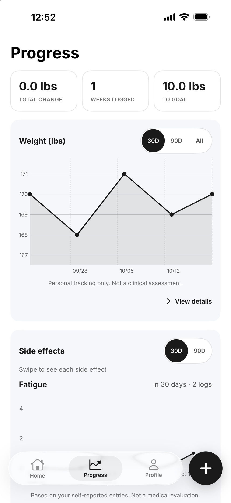

How can I see my weight trend on a GLP-1?
Open Progress in SimplyDose and find the Weight chart. Switch between 30 days, 90 days, and All to see the weight entries you recorded over each period.
See the steps
Read the chart and find the entries
Choose the period you want to review
Use 30D for the past 30 days, 90D for a longer view, or All to see your full recorded history.
Look at the dated entries
The points represent weights you entered. The longer views give you more context than one entry by itself.
Look back at a specific record
Tap a point on the Weight chart to see the exact date and weight. Choose View details on the Weight card to review more of your history.
Can I see weight and dose records together?
Visit Summary brings your logged weight, doses and side effects into one view for a selected date range. Use the summary to review your own records before an appointment.
See how Visit Summary works See what to record on shot dayKeep your records in SimplyDose.
An account and active SimplyDose Premium subscription are required for tracking features.
View on the App Store